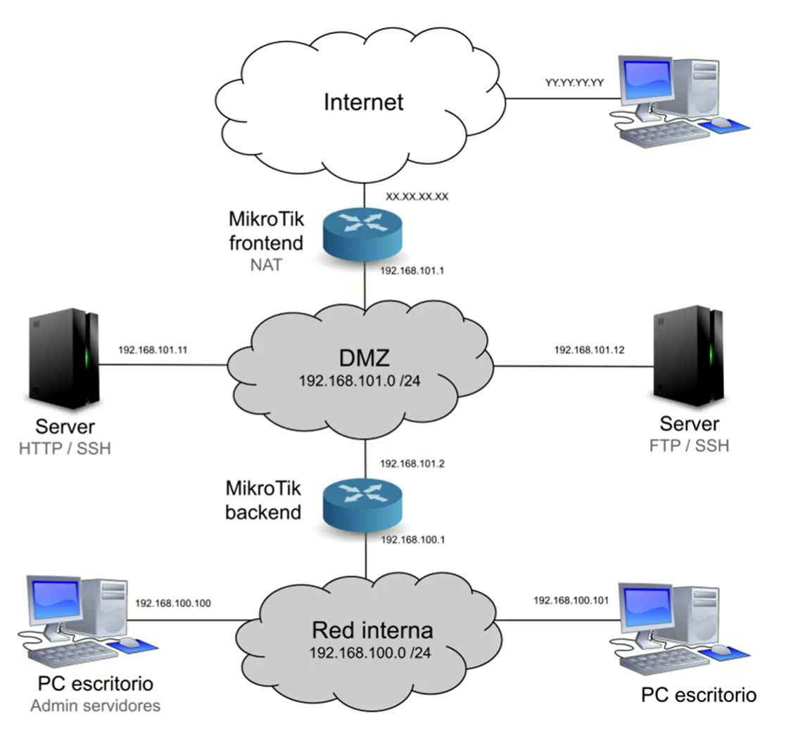
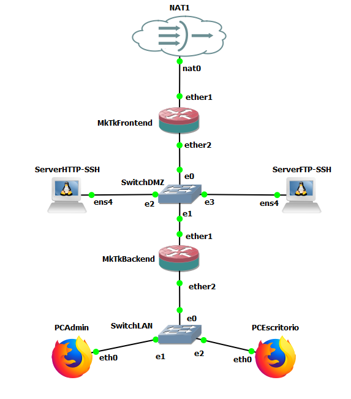
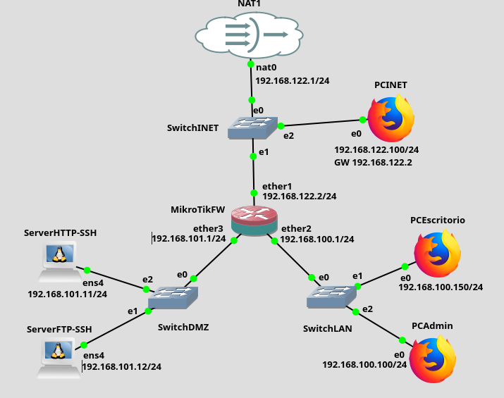

Práctica 7.3: Arquitectura Avanzada de DMZ con Doble Cortafuegos en Cascada
Datos de la Práctica
- Módulo: Seguridad y Alta Disponibilidad (SAD - 0378)
- Unidad Didáctica: UD7 - Seguridad perimetral: cortafuegos y DMZ
- Entorno de trabajo: Emulador de red GNS3 con las siguientes máquinas y appliances:
- Router MikroTik CHR 1 (Cortafuegos Frontend): Gestiona el perímetro externo entre la WAN (Internet) y la DMZ.
- Router MikroTik CHR 2 (Cortafuegos Backend): Gestiona el perímetro interno entre la DMZ y la red interna (LAN corporativa).
- Servidores en DMZ: Nodos Debian para Servidor Web HTTP (
192.168.101.11) y Servidor FTP (192.168.101.12). - Puestos de usuario y administración en LAN: Appliance Webterm/Firefox (
PCAdmin-192.168.100.100) y nodo cliente (PCEscritorio-192.168.100.150). - Cliente externo en WAN: Estación o máquina host (
PCINET-192.168.122.X).
- Archivo de escenario descargable: Puedes apoyarte en el proyecto preconfigurado mktk2routers.gns3project.
1. Objetivos
- Diseñar e implementar en GNS3 una arquitectura perimetral de doble cortafuegos en cascada (Dual-Homed / Back-to-Back Firewalls) para aislar de forma estricta los servicios públicos y la red interna corporativa.
- Aplicar el principio de Defensa en Profundidad (Defense in Depth), comprendiendo cómo la división de responsabilidades entre un cortafuegos perimetral externo (Frontend) y uno interno (Backend) eleva exponencialmente la resiliencia de la infraestructura.
- Configurar enrutamiento estático bidireccional entre múltiples saltos para permitir la visibilidad entre la LAN, la DMZ y la salida a Internet.
- Implementar directivas de redirección de puertos (DNAT) en el cortafuegos Frontend para publicar servicios web y FTP hacia Internet.
- Segmentar el plano de gestión aplicando control granular de acceso por dirección IP y puerto: restringir la administración SSH de servidores exclusivamente al puesto del administrador (
PCAdmin), impidiendo el acceso a estaciones de escritorio ordinarias. - Modificar el puerto del plano de control del cortafuegos (WebFig en TCP 8080) y blindar la cadena
inputfrente a accesos procedentes de zonas no de confianza. - Ejecutar una batería completa de pruebas de auditoría y elaborar la memoria técnica con las evidencias de validación.
2. Fundamentos Técnicos: DMZ con Doble Cortafuegos (Back-to-Back)
En infraestructuras corporativas críticas, la arquitectura de DMZ con un solo router (Three-Legged Firewall) presenta un punto único de fallo (Single Point of Failure): si el cortafuegos sufre una vulnerabilidad de software en su propio kernel o una mala configuración humana, tanto la DMZ como la LAN interna pueden quedar expuestas simultáneamente.
Para maximizar la seguridad perimetral se adopta el esquema de doble cortafuegos en serie o en cascada:

División de Roles entre Cortafuegos
-
Cortafuegos Perimetral Externo (Frontend Firewall):
- Separa la red no confiable (Internet / WAN) de la zona desmilitarizada (DMZ).
- Su misión principal es actuar como primer escudo defensivo: filtrar escaneos masivos, bloquear denegaciones de servicio y publicar de forma estricta únicamente los puertos de los servicios públicos (HTTP, FTP, DNS) mediante reglas de Destination NAT (DNAT).
- Desconoce la topología interna en detalle; únicamente posee una ruta estática hacia la red LAN apuntando como siguiente salto al cortafuegos Backend.
-
Cortafuegos Interno (Backend Firewall):
- Separa la zona desmilitarizada (DMZ) de la red corporativa privada (LAN).
- Constituye la última línea de defensa encargada de custodiar la «joya de la corona»: los puestos de trabajo, bases de datos y controladores de dominio de la organización.
- Aplica una política de aislamiento tajante: bloquea cualquier intento de conexión originado desde la DMZ hacia la LAN. Si un atacante compromete totalmente un servidor web en la DMZ, el cortafuegos Backend le impide pivotar (lateral movement) hacia los equipos de los empleados.
- Permite que los puestos internos naveguen hacia Internet y consuman los servicios de la DMZ, aplicando a su vez privilegios mínimos para las tareas de administración (sólo
PCAdminpuede acceder por SSH a los servidores).
Principio de Heterogeneidad de Fabricantes
En auditorías y directivas de seguridad bancaria, militar y gubernamental (ENS), se recomienda expresamente que el cortafuegos Frontend y el cortafuegos Backend sean de fabricantes distintos (por ejemplo, un Fortinet / pfSense en el perímetro exterior y un Cisco ASA / Palo Alto o MikroTik en el interior, o viceversa). De esta manera, si se publica una vulnerabilidad crítica de día cero (0-day) que afecta al sistema operativo del cortafuegos exterior, dicha vulnerabilidad no existirá en el cortafuegos interior, evitando que el adversario vulnere ambas capas con un único exploit.
3. Topología y Direccionamiento en GNS3
El laboratorio modela el entorno corporativo con la siguiente topología en GNS3:


Tabla de Direccionamiento IP del Laboratorio
| Nodo / Dispositivo | Interfaz | Dirección IP | Máscara | Puerta de Enlace (GW) | Rol en el Laboratorio |
|---|---|---|---|---|---|
| Router Frontend (FW1) | ether1 (WAN) |
Dinámica DHCP / 192.168.122.2 |
/24 |
virbr0 (192.168.122.1) |
Conexión externa a Internet. |
| Router Frontend (FW1) | ether2 (DMZ) |
192.168.101.1 |
/24 |
-- | Enlace DMZ hacia servidores y FW2. |
| Router Backend (FW2) | ether1 (DMZ) |
192.168.101.2 |
/24 |
192.168.101.1 |
Enlace DMZ hacia FW1. |
| Router Backend (FW2) | ether2 (LAN) |
192.168.100.1 |
/24 |
-- | Puerta de enlace de la red LAN. |
| Server Web HTTP | eth0 |
192.168.101.11 |
/24 |
192.168.101.1 |
Servidor Apache (puertos TCP 80 y 22). |
| Server FTP | eth0 |
192.168.101.12 |
/24 |
192.168.101.1 |
Servidor FTP vsftpd (puertos TCP 21 y 22). |
| PCAdmin | eth0 |
192.168.100.100 |
/24 |
192.168.100.1 |
Equipo autorizado de administración de red. |
| PCEscritorio | eth0 |
192.168.100.150 |
/24 |
192.168.100.1 |
Puesto ofimático estándar de usuario. |
| PCINET (Host / WAN) | eth0 |
192.168.122.100 |
/24 |
192.168.122.1 |
Simula un cliente o auditor en Internet. |
4. Desarrollo Paso a Paso de la Práctica
Fase 1: Despliegue del Escenario y Enrutamiento Base
- Apertura del Escenario en GNS3:
- Inicia GNS3 y abre el proyecto base descargado: mktk2routers.gns3project.
- También puedes crear el escenario manualmente arrastrando dos MikroTik CHR, tres switches (WAN, DMZ, LAN), dos servidores Debian y dos clientes gráficos (Webterm o Firefox).
Vídeo de Referencia: Preparación del Escenario
Puedes revisar el montaje del escenario y el cableado de las interfaces en el siguiente vídeo:
-
Configuración de Interfaces en Router Frontend (FW1):
- Conéctate a la consola de FW1 y asigna los direccionamientos:
# Asignar cliente DHCP en ether1 para recibir IP y gateway de Internet: /ip dhcp-client add interface=ether1 disabled=no # Asignar IP fija a ether2 en la DMZ: /ip address add address=192.168.101.1/24 interface=ether2 comment="IP DMZ Frontend" # Enmascaramiento NAT para el tráfico que sale a Internet por ether1: /ip firewall nat add chain=srcnat out-interface=ether1 action=masquerade comment="NAT Internet WAN" -
Configuración de Interfaces y Enrutamiento en Router Backend (FW2):
- Conéctate a la consola de FW2 y configura sus interfaces y su ruta por defecto:
# Asignar IP en ether1 (interfaz hacia la DMZ): /ip address add address=192.168.101.2/24 interface=ether1 comment="IP DMZ Backend" # Asignar IP en ether2 (puerta de enlace de la red LAN): /ip address add address=192.168.100.1/24 interface=ether2 comment="Puerta de enlace LAN" # Ruta por defecto hacia Internet: el siguiente salto es ether2 de FW1 /ip route add dst-address=0.0.0.0/0 gateway=192.168.101.1 comment="Ruta por defecto hacia Internet via FW1" # Enmascaramiento NAT para el tráfico que sale de la LAN hacia la DMZ/Internet: /ip firewall nat add chain=srcnat out-interface=ether1 action=masquerade comment="NAT LAN hacia DMZ/WAN" -
Ruta Estática de Retorno en Router Frontend (FW1):
- Para que FW1 sepa cómo reenviar tráfico hacia la red LAN interna (
192.168.100.0/24), debemos indicarle que el siguiente salto es la interfaz DMZ de FW2:
- Para que FW1 sepa cómo reenviar tráfico hacia la red LAN interna (
-
Verificación de Conectividad Base (Ping Bidireccional):
- Antes de encender los cortafuegos, comprueba que:
- Desde
PCAdmin(192.168.100.100) puedes hacer ping a192.168.101.11(Server Web), a192.168.101.1(FW1) y a Internet (8.8.8.8o192.168.122.1). - Desde
Server Web(192.168.101.11) puedes hacer ping a Internet y a los routers.
- Desde
- Con el enrutamiento verificado, podemos proceder a blindar ambos dispositivos.
- Antes de encender los cortafuegos, comprueba que:
Fase 2: Configuración del Cortafuegos Perimetral Frontend (FW1)
Vídeo de Referencia: Configuración de los Routers
Sigue las directivas de filtrado y NAT explicadas en el siguiente vídeo:
1. Publicación de Servicios Públicos en FW1 (Destination NAT)
Desde WebFig o CLI en FW1, redirige las peticiones entrantes de Internet hacia los servidores de la DMZ:
# Redirección del servicio Web HTTP (TCP 80):
/ip firewall nat add chain=dstnat in-interface=ether1 protocol=tcp dst-port=80 action=dst-nat to-addresses=192.168.101.11 to-ports=80 comment="DNAT Web HTTP hacia 192.168.101.11"
# Redirección del servicio FTP (TCP 21):
/ip firewall nat add chain=dstnat in-interface=ether1 protocol=tcp dst-port=21 action=dst-nat to-addresses=192.168.101.12 to-ports=21 comment="DNAT FTP hacia 192.168.101.12"
2. Reglas de Filtrado en FW1 (Filter Rules)
Aplica una política restrictiva (Whitelisting) en la cadena forward y securiza la cadena input:
# 1. SPI: Aceptar paquetes de conexiones ya establecidas y relacionadas
/ip firewall filter add chain=forward connection-state=established,related action=accept comment="Aceptar retorno SPI forward"
/ip firewall filter add chain=input connection-state=established,related action=accept comment="Aceptar retorno SPI input"
# 2. Permitir peticiones hacia los servidores publicados en DMZ tras el DNAT
/ip firewall filter add chain=forward in-interface=ether1 out-interface=ether2 dst-address=192.168.101.11 protocol=tcp dst-port=80 action=accept comment="Permitir HTTP hacia Server Web DMZ"
/ip firewall filter add chain=forward in-interface=ether1 out-interface=ether2 dst-address=192.168.101.12 protocol=tcp dst-port=21 action=accept comment="Permitir FTP hacia Server FTP DMZ"
# 3. Permitir salida a Internet desde la DMZ y desde la LAN (tráfico saliente por ether1)
/ip firewall filter add chain=forward out-interface=ether1 action=accept comment="Permitir salida hacia Internet WAN"
# 4. Denegación por defecto en FORWARD (descartar cualquier intento de entrada directo)
/ip firewall filter add chain=forward action=drop comment="FORWARD DROP: Descartar resto de trafico"
# 5. Gestión del router FW1: permitir acceso SSH y WebFig solo desde host de gestion autorizado
/ip firewall filter add chain=input src-address=192.168.122.1 protocol=tcp dst-port=80,8080,22 action=accept comment="Permitir gestion FW1 desde Host WAN"
/ip firewall filter add chain=input in-interface=ether2 src-address=192.168.100.100 protocol=tcp dst-port=80,8080,22 action=accept comment="Permitir gestion FW1 desde PCAdmin"
/ip firewall filter add chain=input action=drop comment="INPUT DROP: Bloquear resto de accesos al router"
Fase 3: Configuración del Cortafuegos Interno Backend (FW2)
El cortafuegos Backend debe custodiar de forma implacable la red LAN interna frente a cualquier tráfico procedente de la DMZ o del exterior.
Reglas de Filtrado en FW2 (Filter Rules)
Accede a FW2 (desde PCAdmin en http://192.168.100.1) y configura las siguientes reglas:
# 1. SPI: Aceptar conexiones establecidas y relacionadas
/ip firewall filter add chain=forward connection-state=established,related action=accept comment="SPI forward establecido/relacionado"
/ip firewall filter add chain=input connection-state=established,related action=accept comment="SPI input establecido/relacionado"
# 2. Permitir que la LAN interna acceda a los servidores de la DMZ (HTTP y FTP para todos)
/ip firewall filter add chain=forward in-interface=ether2 out-interface=ether1 dst-address=192.168.101.11 protocol=tcp dst-port=80 action=accept comment="Permitir LAN -> Server HTTP DMZ"
/ip firewall filter add chain=forward in-interface=ether2 out-interface=ether1 dst-address=192.168.101.12 protocol=tcp dst-port=21 action=accept comment="Permitir LAN -> Server FTP DMZ"
# 3. REGLA DE GESTIÓN EXCLUSIVA SSH: Solo PCAdmin (192.168.100.100) puede administrar los servidores DMZ
/ip firewall filter add chain=forward in-interface=ether2 out-interface=ether1 src-address=192.168.100.100 dst-address=192.168.101.11,192.168.101.12 protocol=tcp dst-port=22 action=accept comment="SSH DMZ solo permitido para PCAdmin"
# 4. Permitir salida a Internet general para los puestos de la LAN (navegación web, DNS)
/ip firewall filter add chain=forward in-interface=ether2 out-interface=ether1 action=accept comment="Permitir salida LAN hacia Internet"
# 5. REGLA DE ORO DEL BACKEND: Bloquear tajantemente cualquier tráfico iniciado desde la DMZ hacia la LAN
/ip firewall filter add chain=forward in-interface=ether1 out-interface=ether2 action=drop comment="REGLA DE ORO: Bloquear DMZ hacia LAN"
# 6. FORWARD DROP por defecto
/ip firewall filter add chain=forward action=drop comment="FORWARD DROP: Descartar resto"
# 7. Gestión del Router FW2 (INPUT): Solo PCAdmin puede administrar FW2
/ip firewall filter add chain=input in-interface=ether2 src-address=192.168.100.100 action=accept comment="Gestion FW2 exclusiva desde PCAdmin"
/ip firewall filter add chain=input action=drop comment="INPUT DROP: Bloquear todo acceso no autorizado a FW2"
Fase 4: Reto Evaluativo de Consolidación ("Configuración de un FW")
Para homologar la configuración con el estándar de evaluación del módulo, ajustaremos el puerto del servicio WebFig del router y aplicaremos las directivas específicas de la actividad evaluativa:
-
Cambio de puerto del servicio WebFig:
- Por defecto, WebFig escucha en el puerto TCP 80. Para evitar conflictos con servidores web y dificultar escaneos automáticos, en RouterOS es buena práctica cambiar el puerto a
8080: - En WebFig: IP → Services → www → cambiar
Port: 8080. - O por consola:
- A partir de este momento, el acceso a la interfaz gráfica se realizará mediante
http://<IP_ROUTER>:8080.
- Por defecto, WebFig escucha en el puerto TCP 80. Para evitar conflictos con servidores web y dificultar escaneos automáticos, en RouterOS es buena práctica cambiar el puerto a
-
Matriz de requerimientos finales del reto:
- Desde INET (Internet):
- Acceso a
http://192.168.122.2:80redirige a Apache en192.168.101.11(OK). - Acceso a
ftp://192.168.122.2:21redirige a vsftpd en192.168.101.12(OK). - Sin acceso a la LAN ni a ningún otro puerto de la DMZ (ej. SSH 22).
- Acceso a
- Desde la DMZ:
- Los servidores pueden acceder a Internet para actualizaciones/DNS (OK).
- Los servidores no pueden acceder a la LAN bajo ningún concepto.
- Desde la LAN:
- Todos los equipos navegan por Internet y consultan HTTP y FTP en la DMZ.
- Sólo
PCAdmin(192.168.100.100) puede conectar por SSH al puerto 22 de los servidores de la DMZ.PCEscritorio(192.168.100.150) recibe conexión denegada.
- Administración de los Routers:
- Sólo
PCAdminy el host de gestión192.168.122.1pueden entrar a WebFig (puerto 8080) y SSH (puerto 22).
- Sólo
- Desde INET (Internet):
5. Batería Sistemática de Pruebas y Auditoría
Ejecuta el protocolo sistemático de pruebas desde cada uno de los nodos para auditar el cumplimiento del diseño de seguridad:
1. Pruebas desde PCAdmin (192.168.100.100)
| Prueba | Comando / URL | Resultado Esperado | ¿Superada? | Justificación Técnica |
|---|---|---|---|---|
| P1.1 | http://192.168.100.1:8080 |
Acceso OK a WebFig FW2 | Permitido en INPUT FW2 por IP de origen. | |
| P1.2 | http://192.168.101.11 |
Página de Apache OK | Permitido en FORWARD FW2 hacia DMZ HTTP. | |
| P1.3 | ftp://192.168.101.12 |
Acceso FTP OK | Permitido en FORWARD FW2 hacia DMZ FTP. | |
| P1.4 | ssh admin@192.168.100.1 |
Acceso SSH OK a FW2 | Autorizado en INPUT FW2. | |
| P1.5 | ssh debian@192.168.101.11 |
Acceso SSH OK a Server Web | Autorizado en FORWARD FW2 para PCAdmin. | |
| P1.6 | ssh debian@192.168.101.12 |
Acceso SSH OK a Server FTP | Autorizado en FORWARD FW2 para PCAdmin. | |
| P1.7 | ping -c 3 8.8.8.8 (o 192.168.122.100) |
Respuesta ICMP OK | Tráfico saliente a Internet permitido con NAT. |
2. Pruebas desde PCEscritorio (192.168.100.150)
| Prueba | Comando / URL | Resultado Esperado | ¿Superada? | Justificación Técnica |
|---|---|---|---|---|
| P2.1 | http://192.168.100.1:8080 |
SIN ACCESO / Bloqueado | INPUT FW2 descarta peticiones que no sean de PCAdmin. | |
| P2.2 | http://192.168.101.11 |
Página de Apache OK | Tráfico web autorizado para toda la LAN. | |
| P2.3 | ftp://192.168.101.12 |
Acceso FTP OK | Tráfico FTP autorizado para toda la LAN. | |
| P2.4 | ssh admin@192.168.100.1 |
SIN ACCESO / Bloqueado | INPUT FW2 descarta intentos de administración. | |
| P2.5 | ssh debian@192.168.101.11 |
SIN ACCESO / Bloqueado | Regla SSH DMZ restringe origen a 192.168.100.100. | |
| P2.6 | ssh debian@192.168.101.12 |
SIN ACCESO / Bloqueado | Regla SSH DMZ restringe origen a 192.168.100.100. | |
| P2.7 | ping -c 3 8.8.8.8 (o 192.168.122.100) |
Respuesta ICMP OK | Salida a Internet autorizada. |
3. Pruebas desde PCINET (Host / Red Externa 192.168.122.X)
| Prueba | Comando / URL | Resultado Esperado | ¿Superada? | Justificación Técnica |
|---|---|---|---|---|
| P3.1 | http://192.168.122.2:8080 |
SIN ACCESO / Bloqueado | Bloqueado en INPUT FW1. | |
| P3.2 | http://192.168.122.2 (puerto 80) |
Página de Apache OK | DNAT en FW1 hacia 192.168.101.11:80. | |
| P3.3 | ftp://192.168.122.2 (puerto 21) |
Acceso FTP OK | DNAT en FW1 hacia 192.168.101.12:21. | |
| P3.4 | ssh admin@192.168.122.2 |
SIN ACCESO / Bloqueado | Bloqueado en INPUT FW1 (salvo si coincide con IP host autorizada). | |
| P3.5 | ssh debian@192.168.101.11 |
SIN ACCESO / Bloqueado | No hay DNAT para SSH en FW1 y forward bloqueado. | |
| P3.6 | ping 192.168.100.100 |
SIN ACCESO / Bloqueado | FORWARD DROP en FW1 descarta paquetes hacia LAN. |
4. Pruebas desde los Servidores DMZ (192.168.101.11 y 101.12)
| Prueba | Comando / Acción | Resultado Esperado | ¿Superada? | Justificación Técnica |
|---|---|---|---|---|
| P4.1 | ping -c 3 192.168.100.100 |
¡BLOQUEADO! (0% éxito) | Bloqueado por regla de oro en FORWARD FW2. | |
| P4.2 | ping -c 3 192.168.100.150 |
¡BLOQUEADO! (0% éxito) | Bloqueado por regla de oro en FORWARD FW2. | |
| P4.3 | ssh admin@192.168.101.2 (o FW1) |
SIN ACCESO / Bloqueado | Bloqueado en INPUT del cortafuegos. | |
| P4.4 | ping -c 3 192.168.122.100 |
Respuesta ICMP OK | Salida autorizada hacia Internet a través de FW1. |
6. Cuestiones Técnicas y Análisis de Seguridad
Responde con criterio profesional a las siguientes preguntas:
- Defensa en Profundidad frente a Compromiso Total de la DMZ:
- Imagina que un atacante logra comprometer con privilegios de
rootel servidor Apache (192.168.101.11). Analiza qué dispositivos y directivas de red evitan que dicho atacante pueda acceder o escanear los equipos de la LAN corporativa (192.168.100.0/24). ¿Qué tendría que conseguir vulnerar el atacante a continuación para poner un pie en la LAN?
- Imagina que un atacante logra comprometer con privilegios de
- Coexistencia entre Enrutamiento y Filtrado:
- En el router Frontend (FW1) existe una ruta estática explícita hacia la LAN interna (
192.168.100.0/24 via 192.168.101.2). Si dicha ruta existe en la tabla de enrutamiento, ¿por qué un paquete ICMP procedente de Internet dirigido a192.168.100.100no llega a su destino? ¿Qué componente del router se procesa antes y detiene el paquete?
- En el router Frontend (FW1) existe una ruta estática explícita hacia la LAN interna (
- Control Granular por Identidad y Dirección IP:
- En la cadena
forwardde FW2 hemos establecido que sóloPCAdmin(192.168.100.100) pueda conectar por SSH a los servidores de la DMZ, mientras quePCEscritorio(192.168.100.150) lo tiene denegado. ¿Qué técnicas de mitigación adicionales implementarías en un entorno real para evitar que un usuario malicioso enPCEscritoriose cambie manualmente su dirección IP a192.168.100.100para burlar el cortafuegos (IP Spoofing)?
- En la cadena
- Resiliencia ante Vulnerabilidades del Proveedor:
- Explica por qué la utilización de sistemas operativos distintos para el cortafuegos exterior e interior (por ejemplo, OPNsense/pfSense en el Frontend y RouterOS en el Backend) constituye un estándar de oro en arquitecturas perimetrales de alta seguridad.
7. Entregables
Presenta los siguientes elementos para la evaluación de la práctica:
- Archivos de Respaldo de Configuración:
- Exportación del archivo de respaldo de RouterOS sin cifrar del Cortafuegos Frontend:
fw_frontend.backup(o script de exportaciónfw_frontend.rsc). - Exportación del archivo de respaldo de RouterOS del Cortafuegos Backend:
fw_backend.backup(o script de exportaciónfw_backend.rsc).
- Exportación del archivo de respaldo de RouterOS sin cifrar del Cortafuegos Frontend:
- Memoria Técnica en PDF:
- Portada: Título de la práctica, datos del alumno y fecha.
- Captura del Escenario en GNS3: Topología en ejecución con todas las máquinas encendidas e interfaces etiquetadas.
- Evidencias de Configuración:
- Capturas de la ventana IP → Firewall → Filter Rules y NAT de FW1 (Frontend).
- Capturas de la ventana IP → Firewall → Filter Rules y NAT de FW2 (Backend).
- Captura del cambio de puerto de WebFig a
8080.
- Resultados de las Pruebas: Tablas de comprobación del apartado 5 debidamente cumplimentadas con las observaciones empíricas.
- Cuestiones Técnicas: Respuestas detalladas y argumentadas a las cuatro cuestiones del apartado 6.